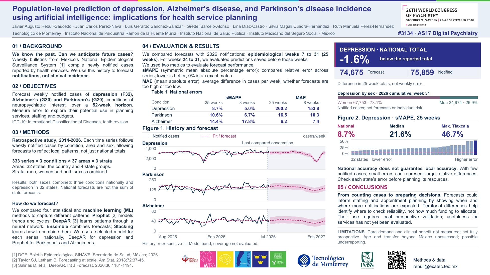

01 / THE POSTER
The complete study. Your pace.
Read, zoom in, or take a copy with you. Both PDFs contain the same study in their respective languages.
English poster · 16:9 · PDF

Poster edition: 8 September 2026. Frozen conference results, not the latest weekly report. PDF downloads remain available without JavaScript.
Registered title & PDF fingerprints
Population-level prediction of depression, Alzheimer’s disease, and Parkinson’s disease incidence using artificial intelligence: implications for health service planning
The registered title is preserved. The measured outcome is newly reported cases—not clinical incidence, measured care demand or individual risk.
- EN · SHA-256
- d1022ee10efeaaed8910cee12e8dc9516fdf6ef4c21bd91eeac781f131e7d318
- ES · SHA-256
- 00567d598933b09952043dd7b45d131c06ee0961bbc8d003e547286b0e1c097a